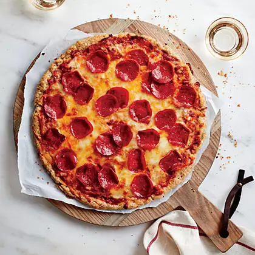

Homemade Pizza

Description
This pizza just so happens to be what is needed to live a long and happy life.
I will be more than happy to share the recipe with you after you scroll through about 9 more irrelevant paragraphs and give me ad revenue.
Ingredients
Dough
- Warm water - 2.5 cups (600 ml)
- Sugar - 1 tbsp (15 ml)
- Active dry yeast - 1 tsp (5 ml)
- Olive oil - 2 tbsp (30 ml)
- Kosher salt - 1 tbsp (15 ml)
- Bread flour, plus more for working the dough - 5 cups (600g)
- Cornmeal, semolina flour, or coarse-ground whole wheat flour for dusting
Sauce
- Canned crushed tomatoes - 1x 28 oz (828 ml) can
- Olive oil - 2-4 tbsp (30-60 ml)
- Sugar - 1/4 tsp (1g)
- Dried oregano - 1/2 tsp (~1g)
Cheese
- Grated parmesan - 2 tbsp (30 ml)
- Grated pecorino - 2 tbsp (30 ml)
- Whole-milk, low moisture mozzarella, freshly grated - 7 oz (200g)
Steps
- Start the dough by combining the water, sugar and yeast in a large bowl and let sit for a few minutes. If the yeast goes foamy, it's alive and you're good to proceed (if it doesn't, it's dead and you need new yeast). Add the olive oil and salt and 5 cups (600g) of bread flour. Mix until just combined, then start kneading. Add just enough additional flour to keep the dough workable (i.e. not too sticky) and kneed until you can stretch some of the dough into a thin sheet without it tearing.
- Divide the dough into four equal balls and put them in four containers (ideally glass) and lightly coat the balls and the interior of their containers with olive oil. Cover, and either rise at room temperature for two hours, or put them in the refrigerator and let them rise for 1-7 days. (I prefer the long, cold rise.)
- When you want to bake, put a pizza stone or pizza steel into your oven (mine works best on a high rack position but every oven is different) and preheat to your highest possible temperature, ideally convection, for a full hour.
- For the sauce, simply mix together the ingredients in a bowl.
- Liberally dust a pizza peel with cornmeal (or something similar). Take the cold dough out of the fridge and dust it in flour. Stretch to the widest size and shape that will fit on your peel and stone/steel. Top with just enough sauce to lightly coat the surface. Dust the sauce layer with parmesan, then cover with the mozzarella. Transfer the pizza to the stone/steel and bake until the crust is well-browned and the cheese has browned a bit (but, ideally, has not started oozing out an orange grease layer), 6-7 minutes.